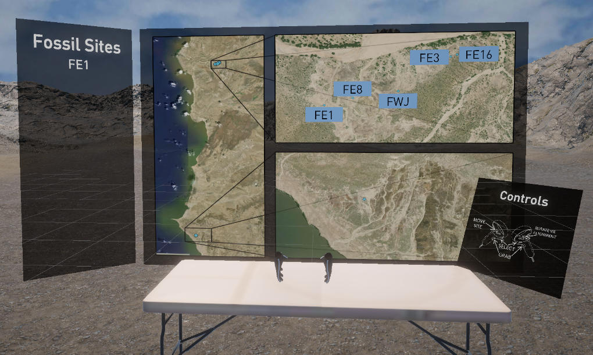

Fossil footprints are far less accessible than most skeletal fossils and artifacts, because they cannot be removed from their primary contexts and are typically re-buried following excavation.
Digital representations of footprint sites (e.g., 3-D models) are often cumbersome, and difficult to visualize in traditional publishing formats. Accurate scale is also essential for interpreting them, and scale is not easily appreciated when viewing a digital 3-D model (with zoom) or a 2-D image (Fig. 1).
We leveraged virtual reality (VR) technologies to develop an immersive experience, allowing users (e.g., students and the public) to “visit” and interact at full-scale with 3-D representations of otherwise inaccessible fossil footprint sites.
We focus on visualizing fossil footprint sites from Okote Member deposits near Ileret and Koobi Fora, Kenya, where there exist high concentrations of hominin footprint sites. Direct interaction with these models in VR may provide more intuitive insights and understandings of the movement of fossil hominins and the animals that co-existed on their landscapes.
This project was funded by The Chatham University 2022 Summer Undergraduate Research Program, with some continued support from department work-study programs. A version of this project, Bringing the past to the future: Experiencing fossil footprint sites through virtual reality, was accepted to the 92nd Annual Meeting of the American Association of Biological Anthropologists undergraduate research symposium.
Student Researchers:
Benjamin Brown, Korbin Nevius
Faculty Advisors:
Kevin Hatala, Hugh “Hunter” Dyar IV